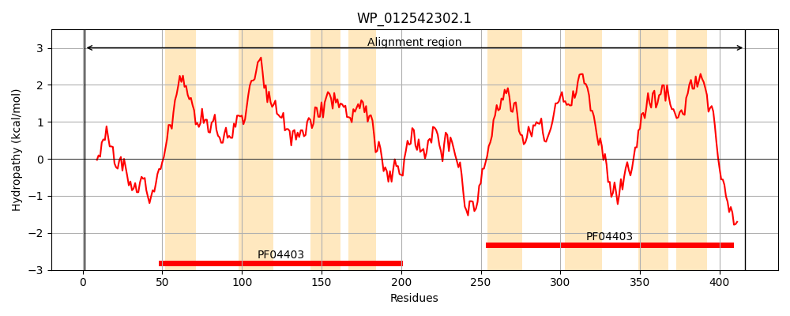
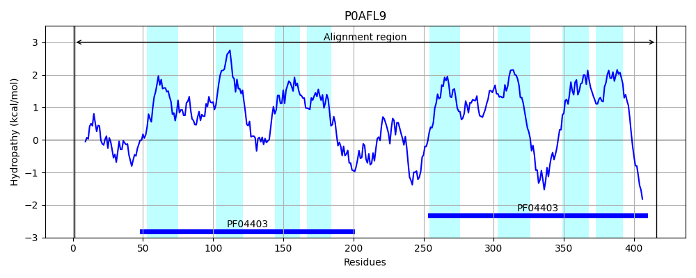
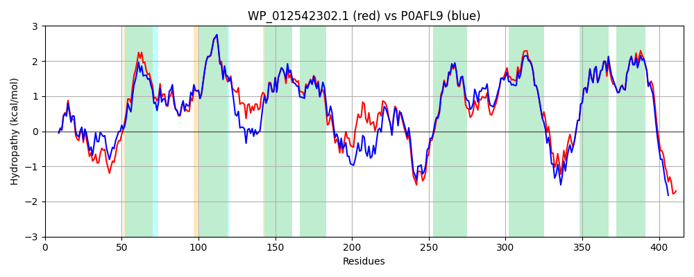

Hit Accession: P0AFL9
Hit TCID: 9.A.69.1.1
Hit Description: gnl|BL_ORD_ID|8831 gnl|TC-DB|P0AFL9|9.A.69.1.1 Paraquat-inducible protein A OS=Escherichia coli (strain K12) GN=pqiA PE=2 SV=1
Mach Len: 416
e:0.000000
Query TMS Count : 8
Hit TMS Count: 8
TMS-Overlap Score: 8.100000
Predicted Substrates:CHEBI:8150;phospholipid
BLAST Alignment:
Score: 1883 , Bit scores: 729 bits, E-value: 0.0e+00, Alignment length: 416, Percentage identity: 83
Query: 1 MCDHHHAARHILCPQCDLLVALPQLEHRQKAACPRCGTTLTTTWDAPRQRPTAYALVALFMLLLANLFPFIYMKVGGISSEIALLEIPNVLFTEDYASLGTFFLLFVQLVPAFCLVTILLLVNRVRMPAGLKAFLARILFHLKTWGMAEIFLAGVLVSFVKLMAYGDIGIGLSFIPWCMFCLLQLRTFQCVDRRWLWDDIAPMPAITQPLKVGVAGIRQGLRSCGCCTAVLPADQTVCPRCHSKGTARRKNSLQWTLALLVTSFILYLPANIMPIMITDLLGDKMPSTIMAGVVLLWSEGSYPVALVIFIASIMVPTLKMIAIAWLCWNANGNGARDSERMHLIYEVVEFVGRWSMIDVFVIAVLSALVRMGGLMNIYPAIGAVMFALVVVMTMFSAMTFDPRLLWDREPDSSHEE 416
MC+HHHAA+HILC QCD+LVALP+LEH QKAACPRCGTTLT WDAPRQRPTAYAL ALFMLLL+NLFPF+ M V G++SEI LLEIP VLF+EDYASLGTFFLLFVQLVPAFCL+TILLLVNR +P LK LAR+LF LKTWGMAEIFLAGVLVSFVKLMAYG IG+G SF+PWC+FC+LQLR FQCVDRRWLWDDIAPMP + QPLK GV GIRQGLRSC CCTA+LPAD+ VCPRC +KG RR+NSLQWTLALLVTS +LYLPANI+PIM+TDLLG KMPSTI+AGV+LLWSEGSYPVA VIF+ASIMVPTLKMIAIAWLCW+A G+G RDSERMHLIYEVVEFVGRWSMIDVFVIAVLSALVRMGGLM+IYPA+GA+MFALVV+MTMFSAMTFDPRL WDR+P+S HEE
Sbjct: 1 MCEHHHAAKHILCSQCDMLVALPRLEHGQKAACPRCGTTLTVAWDAPRQRPTAYALAALFMLLLSNLFPFVNMNVAGVTSEITLLEIPGVLFSEDYASLGTFFLLFVQLVPAFCLITILLLVNRAELPVRLKEQLARVLFQLKTWGMAEIFLAGVLVSFVKLMAYGSIGVGSSFLPWCLFCVLQLRAFQCVDRRWLWDDIAPMPELRQPLKPGVTGIRQGLRSCSCCTAILPADEPVCPRCSTKGYVRRRNSLQWTLALLVTSIMLYLPANILPIMVTDLLGSKMPSTILAGVILLWSEGSYPVAAVIFLASIMVPTLKMIAIAWLCWDAKGHGKRDSERMHLIYEVVEFVGRWSMIDVFVIAVLSALVRMGGLMSIYPAMGALMFALVVIMTMFSAMTFDPRLSWDRQPESEHEE 416 | Protein Hydropathy Plots: |
|---|
|  |  |
Pairwise Alignment-Hydropathy Plot:
|
|---|
|  |